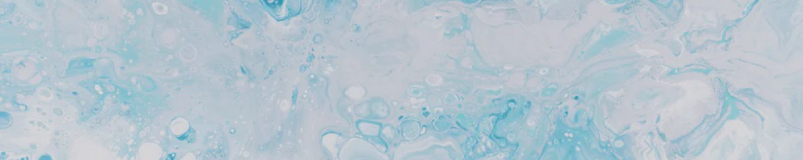

(2014.08.08 ~ 2014.08.22) Eastern Europe
동독일, 오스트리아, 체코를 14일에 걸쳐 여행했습니다.
가장 기억에 남는 장소는 독일의 노이슈반슈타인 성, 오스트리아의 할슈타트, 체코의 체스케부데요비체로 그 중 할슈타트가 가장
인상깊었습니다. 한국에는 비둘기가 흔한 새 중 하나였지만, 할슈타트를 비롯한 동유럽에선 백조가 가장 흔한 새들 중 하나였고,
그 백조들이 할슈타트에서 가장 많이 보였기 때문입니다. 사람들을 두려워하지 않아 먼저 다가오곤 하던 백조들이 친근하게 여겨졌습니다.
(2018.7.24 ~ 2018.7.28) Vietnam
베트남의 다낭을 3일에 걸쳐 느긋하게 여행했습니다.
베트남에 간 이유가 호캉스를 즐기기 위함이었으므로, 동유럽만큼 많은 곳을 돌아다니진 않았습니다.
Vinpearl 리조트에서 쉬는 것이 주 일과였으나 다낭의 오행산, 다낭 대성당, 미케비치와 한시장, 영흥사 등 다낭에서 봐야 할 명소는
전부 둘러보지 않았나 생각됩니다. 다낭 특유의 웃음이 많은 분위기를 되짚어 생각하고 있자면 아직까지도 한결 기분이 좋아집니다.